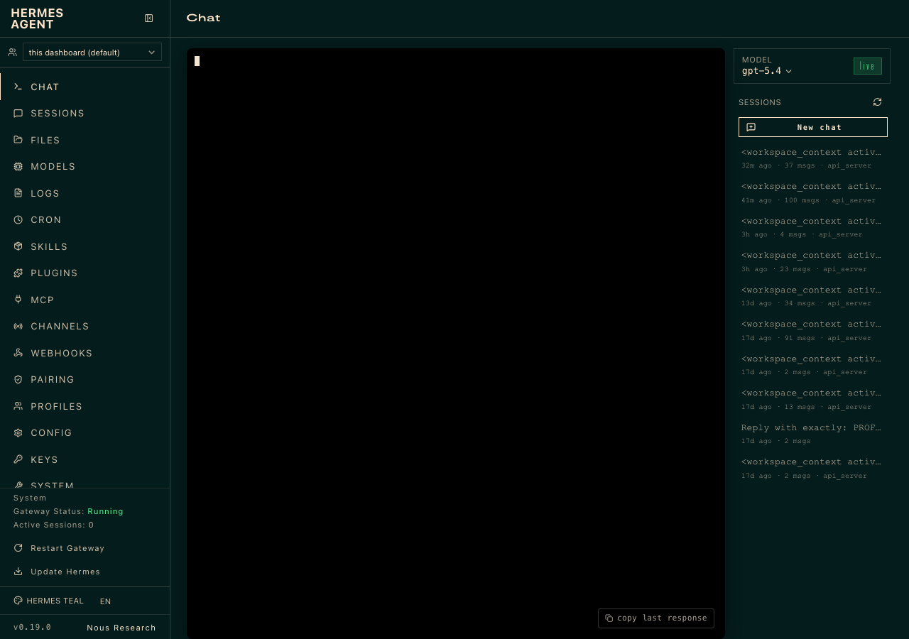
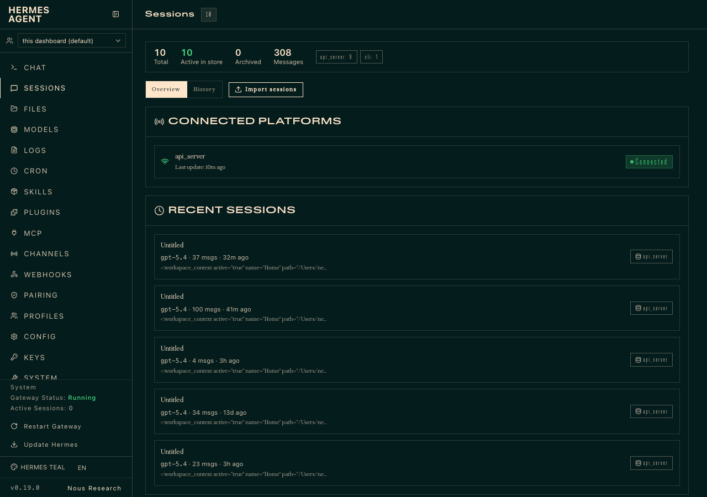

Hermes Agent Web UI — The Built-in Dashboard
Hermes Agent has its own browser UI at localhost:9119 — no Workspace needed. It's lighter and faster for quick tasks: checking sessions, switching models, editing config, browsing skills, and chatting directly. Think of it as the "admin panel" for your agent.
Open http://localhost:9119 directly if the browser doesn't auto-open.

Left nav pages
💬 Chat
Direct chat with your agent. Same sessions as CLI — pick up any conversation.
📋 Sessions
Browse, search, resume, rename, export, or prune past sessions.
📁 Files
Browse your workspace files without leaving the browser.
🤖 Models
Switch providers and models interactively. Add OAuth or API keys.
📜 Logs
Real-time agent, gateway, and error logs with filtering.
⏰ Cron
Create, pause, resume, and inspect scheduled jobs.
🧩 Skills
Browse installed skills, install from hub, configure per-platform.
🔌 MCP
Add and manage MCP server configurations.
📡 Channels
Configure messaging platform connections (Telegram, Slack, Discord…).
⚙️ Config
Edit config.yaml settings: model, terminal backend, agent behavior.
🔑 Keys
Manage API keys stored in ~/.hermes/.env.
🖥️ System
Version, health, platform status, restart gateway.

In the Dashboard Chat at :9119, try:
dashboard for daily use.~/.hermes/workspace-overrides.json.